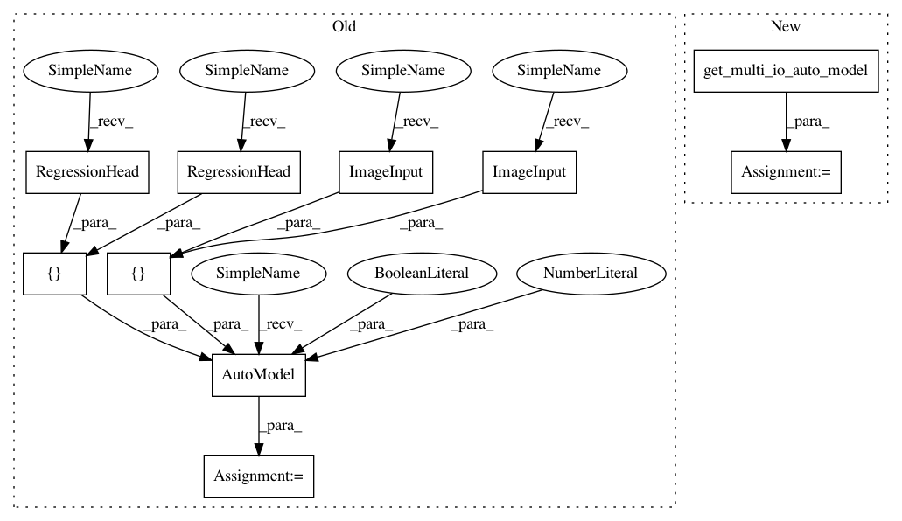

41542e4390b3de8beac4222a9e58925e56c872a5,tests/autokeras/auto_model_test.py,,test_multi_io_with_tf_dataset,#Any#Any#,111
Before Change
@mock.patch("autokeras.auto_model.get_tuner_class")
def test_multi_io_with_tf_dataset(tuner_fn, tmp_path):
auto_model = ak.AutoModel([ak.ImageInput(), ak.ImageInput()],
[ak.RegressionHead(), ak.RegressionHead()],
directory=tmp_path,
max_trials=2,
overwrite=False)
x1 = utils.generate_data()
y1 = utils.generate_data(shape=(1,))
dataset = tf.data.Dataset.from_tensor_slices(((x1, x1), (y1, y1)))
auto_model.fit(dataset, epochs=2)
After Change
@mock.patch("autokeras.auto_model.get_tuner_class")
def test_multi_io_with_tf_dataset(tuner_fn, tmp_path):
auto_model = get_multi_io_auto_model(tmp_path)
x1 = utils.generate_data()
y1 = utils.generate_data(shape=(1,))
dataset = tf.data.Dataset.from_tensor_slices(((x1, x1), (y1, y1)))
auto_model.fit(dataset, epochs=2)
In pattern: SUPERPATTERN
Frequency: 4
Non-data size: 10
Instances
Project Name: jhfjhfj1/autokeras
Commit Name: 41542e4390b3de8beac4222a9e58925e56c872a5
Time: 2020-05-24
Author: jin@tamu.edu
File Name: tests/autokeras/auto_model_test.py
Class Name:
Method Name: test_multi_io_with_tf_dataset
Project Name: jhfjhfj1/autokeras
Commit Name: 41542e4390b3de8beac4222a9e58925e56c872a5
Time: 2020-05-24
Author: jin@tamu.edu
File Name: tests/autokeras/auto_model_test.py
Class Name:
Method Name: dataset_error
Project Name: keras-team/autokeras
Commit Name: 41542e4390b3de8beac4222a9e58925e56c872a5
Time: 2020-05-24
Author: jin@tamu.edu
File Name: tests/autokeras/auto_model_test.py
Class Name:
Method Name: test_multi_io_with_tf_dataset